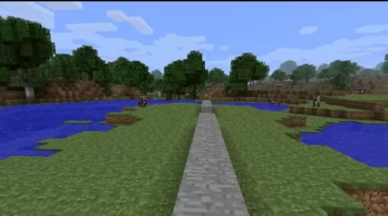

Our site is dedicated to the computer game Minecraft.
It will publish re-uploads of versions from the official website of the game.
In short, this site is a mirror of the official site of the game - www.minecraft.net.
There are currently several versions available that you can download:
Comments are limited
Qunsl64 • 08/25/2011
- The main resources of the game have broken.
- Thank you for the opportunity to install versions from outside.
NUclEaR_144 • 04/15/2011
